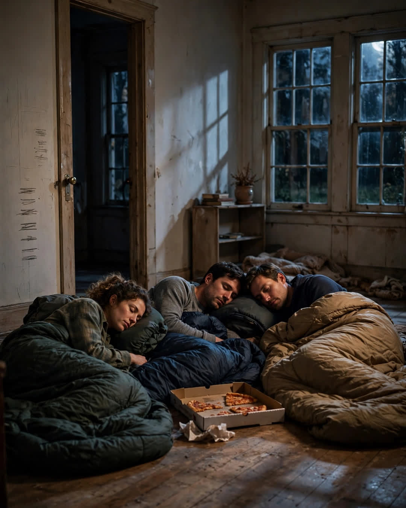

The Last Night in the House
A Clipp Kaili original story

The night before we sold our childhood home, my brother, my sister, and I slept on the living room floor like we were kids again — and none of us slept much at all.
The house was empty by then. Forty years of furniture gone in a week of trucks and tape and arguments about who wanted Mom's hutch. The rooms echoed. Every step sounded too loud, like the house was already trying to forget us. We brought sleeping bags, a pizza, and a bottle of the cheap wine Dad used to call "the good stuff" because it cost more than five dollars.
We told ourselves it was practical. Someone should stay the last night, make sure the pipes didn't freeze, hand the keys to the realtor in the morning. That was a lie and we all knew it. We stayed because none of us could stand the thought of the house spending its last night as ours completely alone.
Around midnight, my sister Rachel sat up in the dark and said, "Tell me a room."
"What?" my brother Jonah said.
"A room that has to come with us. We can't take the house. So tell me a room we're not leaving behind."
We stayed up until four in the morning doing it. The kitchen, where Mom taught all three of us to make gravy and burned it every Thanksgiving for a decade on purpose, she finally admitted at sixty, because Dad liked the crispy bits. The bathroom with the cracked green tile where Jonah learned to shave watching Dad in the mirror, both of them with foam on their faces like matching snowmen. The stairs Rachel fell down the week before her wedding and swore us to secrecy about, limping down the aisle like royalty.
Then Jonah went quiet. "The hallway," he said at last.
We both looked at him.
"The hallway by your bedrooms. When I was little and I had nightmares, I didn't go to Mom and Dad's room. I came and slept outside your doors. On the floor. Because I figured whatever was scary would have to get through both of you first."
He had never told us. Thirty years, and he had never told us.
Rachel reached across the sleeping bags and held his hand like he was seven again.
That is when I understood what we were really doing on that floor. We weren't saying goodbye to drywall and floorboards. We were deciding, out loud, in the dark, which memories were load-bearing — which ones were holding up the people we had become, and therefore could never be sold, no matter whose name went on the deed.
The next family will paint the kitchen. They should. They'll fix the green tile and not know it was ever cracked. But the hallway where a scared little boy slept safe between his sisters is not theirs to lose, because Jonah finally told us, and now we carry it.
At sunrise, we rolled up the sleeping bags. Rachel took one last photograph of the empty living room. Jonah fixed the loose step on the porch that Dad had been meaning to fix since 1998, because he said a family should leave a house better than the market found it.
I was the last one out. I put my hand flat against the wall by the front door, where pencil marks measured us growing, year by year, under Mom's handwriting. The buyers had agreed not to paint over it for as long as their own kids were small. Some things even strangers understand.
A house is only wood and time.
A home is the stories you refuse to leave inside it when you go.
This story is a work of fiction, written to touch hearts and bring families closer.
← Back to all stories